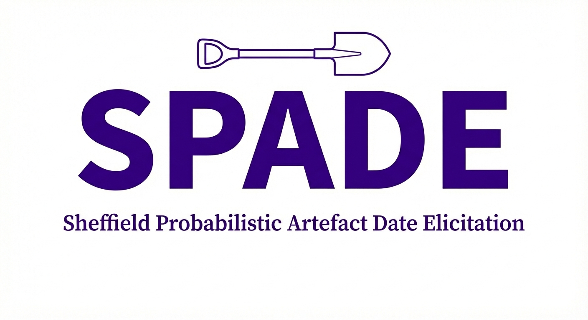

The Sheffield Probabilistic Artefact Date Elicitation (SPADE) package contains a Shiny app that can be used to elicit probabilistic date estimates for artefacts based on expert knowledge.
It has been developed as part of the Quantifying Uncertainty in Expert Archaeological Evidence (QUEADE) project funded by the Leverhulme Trust (RPG-2023-323) and accompanies the publication:
Krzyzanska, M., May, K., Mees, A. W., Oakley, J. E., Wigg-Wolf, D., & Buck, C. E. Quantifying uncertainty in Expert Archaeological Dating Evidence: a formal knowledge elicitation approach. Submitted to the Journal of Archaeological Science.
Description
The app included in this repository allows users to elicit probability distributions for artefact dates using the histogram (also known as a roulette or a chip-and-bin) method. It requires users to input the earliest and latest plausible dates for the event of interest (e.g. deposition) in the life cycle of an archaeological artefact and place tokens representing probability on a timeline divided into equal intervals.
It then automatically fits a range of probability distributions to the cumulative probabilities implied by the token allocation and provides users with feedback on the fit. It also allows users to input relevant metadata about the dates and automatically generates the documentation and outputs required to reproduce the distribution fitting process.
The repository also contains a tutorial introducing the methodology in the context of uncertainty about dates. It is strongly recommended that new users go through it before running the app.
The elicitation methodology used in the software was originally implemented in the general-purpose SHELF package (recommended for applications that do not involve artefact dates). SHELF is accompanied by a range of general-purpose elicitation tutorials that provide a useful introduction to elicitation, which can be found here.
Beyond the app, SPADE provides a suite of functions that can be used to load elicited dates saved from the app into an R session and process them to reproduce plots generated by the app or perform further analysis. An example workflow can be found ‘here’ file.
Running the App Online
The elicitation app and tutorial available in this package are hosted on shinyapps.io and can be accessed with the following links:
- Main App: https://queade.shinyapps.io/spade/
- Tutorial: https://queade.shinyapps.io/spade-tutorial-1/
Note: Hosting is currently limited by a free tier allowance, so the apps may temporarily be down if rate limits are exceeded. It is recommended to install and run the app locally using the instructions below.
Local Installation
Running SPADE locally requires an R installation (instructions here).
-
Install
devtoolsif you do not already have it:install.packages("devtools") -
Install the latest version of
spadedirectly from GitHub:devtools::install_github("mkrzyzanska/spade")
Running the App Locally
To launch the main application:
spade::run_spade()To launch the tutorial:
spade::run_tutorial1()Acknowledgements
This repository contains modified code from the SHELF package (Oakley, 2015) under the GNU General Public License. It also repurposes a data class from the rcarbon package (Bevan and Crema, 2017) with a view to developing interoperability between the two packages in the future.
How to Cite
If you use this software, please cite it as follows:
BibTeX
@software{krzyzanska_spade_2026,
author = {Krzyzanska, Marta},
title = {{SPADE}: Sheffield Probabilistic Artefact Date Elicitation},
year = {2026},
publisher = {GitHub},
journal = {GitHub repository},
howpublished = {\url{[https://github.com/mkrzyzanska/spade](https://github.com/mkrzyzanska/spade)}}
}Text Citation
Krzyzanska, M. (2026). SPADE: Sheffield Probabilistic Artefact Date Elicitation [Computer software]. GitHub. https://github.com/mkrzyzanska/spade